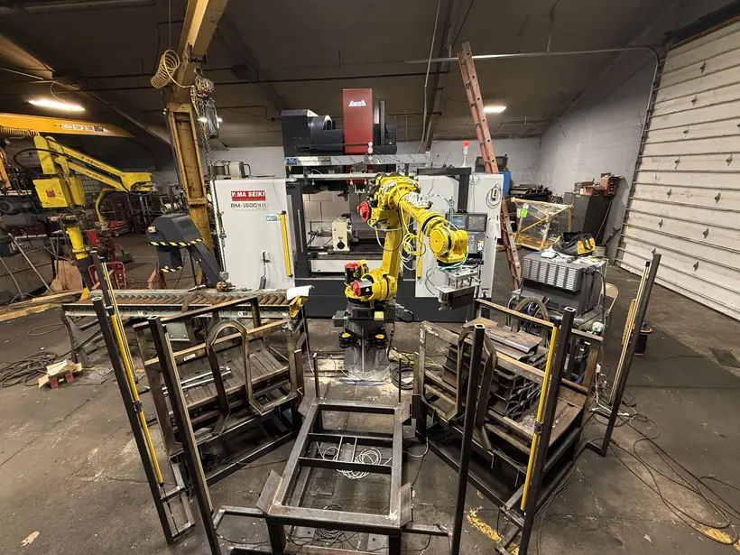

Automation · Controls
FANUC Robot & VMC Automated Manufacturing Cell
Programmed and helped set up an automated cell in which a FANUC R-1000iA/100F six-axis robot moves track shoes between material racks and a Yama Seiki BM-1600MAX machining center. Included TP programming and RoboGuide simulation across four part sizes, PLC ladder logic and safety interlocks, custom end-of-arm tooling, and a 3D-printed mount for a vision-based clamping check.